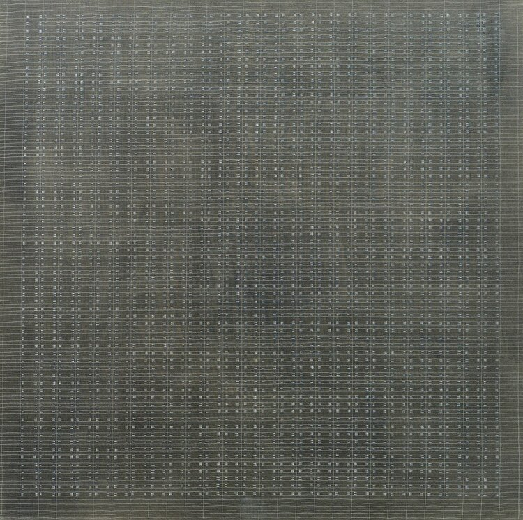

Ontological Analysis
Excavating AI is a meticulous investigation into how machine learning systems inherit and perpetuate cultural assumptions through the images used to train them. Rather than treating datasets as neutral resources, the project unpacks their hidden architectures, taxonomies, and the ways they encode power, identity, and bias. Each section visually and critically exposes a layer of the infrastructures that sustain computer vision. The project employs a forensic approach to dataset analysis, systematically examining the cultural, political, and economic dimensions of AI training data to reveal how seemingly objective technological systems are actually embedded with historical prejudices and contemporary power dynamics.
-
Training AI
The project begins by comparing artworks to show how images can hold many meanings. Agnes Martin's White Flower and Magritte's The Treachery of Images reveal how labels never fully capture what an image is or does. This points out that AI systems rely on naming and sorting to make sense of pictures. But the gap between an image and its label is always there. This gap is a core problem in supervised learning. It helps explain why AI can misread or oversimplify visual experience. The comparison demonstrates the fundamental epistemological challenge at the heart of computer vision: the impossibility of perfectly translating visual experience into discrete categories. Martin's minimalist abstraction and Magritte's conceptual play with representation both highlight how meaning in images is contextual, subjective, and resistant to fixed classification—precisely the qualities that AI systems struggle to process. This opening establishes the theoretical foundation for understanding why bias in AI is not simply a technical glitch but a structural feature of how machine learning systems attempt to make sense of visual complexity.


-
Anatomy of a Training Set
Using ImageNet as an example, the project shows how millions of pictures are sorted and labeled by paid workers on Mechanical Turk. These platforms are part of the hidden labor behind datasets. One image shows the interface where workers assign tags. Another highlights the label "Hermaphrodite," which exposes harmful and outdated ideas still embedded in the system. This reveals that bias is not rare but common. Data collection always carries traces of culture and prejudice. The section exposes the invisible infrastructure of AI training, revealing how the massive scale of dataset creation relies on precarious, underpaid labor. The Mechanical Turk interface becomes a window into the human cost of AI development, showing how workers are paid pennies to make decisions that will shape how machines understand the world. The "Hermaphrodite" label exemplifies how historical prejudices become embedded in supposedly neutral technological systems, demonstrating that bias is not an accident but a feature of how cultural assumptions are encoded into data.
-
Categories and Image Selections from "Person" Classes, ImageNet
The project gathers examples of ImageNet's "Person" categories like "Accused," "Kleptomaniac," and "Anti-Semite." The faces are partly covered to show that these labels turn real people into harmful types. This evidence shows how classification systems create stereotypes. The images prove that bias is structural, not just an accident. They show how datasets can reproduce stigma and exclusion. This problem is central to computer vision. This section provides the most damning evidence of how AI systems perpetuate historical discrimination. By collecting examples of harmful classifications and showing the real people behind these labels, the project demonstrates how machine learning systems can transform individuals into harmful stereotypes. The redacted faces serve as both protection for the subjects and a powerful visual metaphor for how AI systems reduce complex human identities to problematic categories. This evidence shows that bias in AI is not a bug but a feature of how classification systems work—they inevitably reflect and amplify the prejudices of their creators and the societies they emerge from.
-
UTK: Making Race and Gender from Faces
The UTKFace dataset shows how AI systems assign simple labels like "White Male" or "Indian Male" to people's faces. This practice flattens complex identities into fixed categories. The project explains how these labels echo the history of racial pseudoscience. The images make this process visible. They show how old ideas about difference get encoded into new technologies. This raises questions about who decides how identity is defined. This section connects contemporary AI practices to the long history of scientific racism and eugenics. The UTKFace dataset's classification scheme—with its binary gender categories and racial classifications—demonstrates how 19th-century pseudoscientific ideas about human difference persist in 21st-century technology. The project shows how these classifications are not neutral scientific categories but political decisions that reflect specific historical and cultural contexts. By making the classification process visible, it reveals how AI systems can perpetuate harmful ideas about human difference while appearing to be objective and scientific.
-
IBM's Diversity in Faces
IBM tried to build a fairer dataset by adding details about facial symmetry, craniofacial landmarks, and skin tone. But the project shows how even these efforts still divide people into measurable traits. The dataset still uses binary gender and fixed labels. This example proves that even improvements can keep old ideas in place. The images show how fairness can become another form of control. This challenges simple claims about bias-free AI. This section examines the limitations of technical solutions to social problems. IBM's "Diversity in Faces" dataset represents an attempt to address bias through better measurement and more diverse sampling. However, the project reveals how even well-intentioned efforts can perpetuate problematic assumptions about human difference. The focus on measurable traits like facial symmetry and skin tone demonstrates how attempts to be "fair" can still rely on reductive and potentially harmful ways of categorizing people. This example shows that the problem is not just about better data collection but about fundamentally rethinking how we approach human difference in AI systems.
-
Epistemics of Training Sets
This section questions the idea that visual data can be perfectly sorted or fully understood. Excavating AI argues that datasets always carry the worldviews and politics of their makers. Every choice about labels, categories, and images reflects power. The project shows that knowledge itself is shaped by culture and context. This raises deeper questions about objectivity. It invites us to think about what data leaves out. This theoretical section provides the philosophical foundation for understanding why AI bias is inevitable. It challenges the assumption that data can be neutral or objective, arguing instead that all knowledge production is shaped by cultural, political, and economic factors. The section draws on critical theory to show how the very act of classification is a form of power—deciding what counts as knowledge and how it should be organized. This perspective helps explain why technical solutions to AI bias often fail: they don't address the fundamental ways in which knowledge itself is constructed through power relations.
-
Missing Persons
A photo from the MS-Celeb dataset shows the millions of faces that were removed after backlash over consent and privacy. This removal is a reminder that AI systems are built on unsteady ground. The disappearance of data is itself a record of conflict. It shows how power and ethics collide in dataset construction. The project uses this absence as evidence. It calls for accountability and transparency. This section examines the aftermath of dataset controversies and what they reveal about the ethics of AI development. The removal of the MS-Celeb dataset after public outcry demonstrates how AI systems are built on contested ground—data that was collected without proper consent and used without permission. The "missing" faces become a powerful metaphor for the people who are excluded, exploited, or erased in the process of building AI systems. This example shows how questions of consent, privacy, and human rights are central to AI development, not peripheral concerns that can be addressed later.
-
Conclusion: Who Decides?
The project ends with a photo of Memphis sanitation workers holding "I AM A MAN" signs. This moment connects the right to name yourself to the ethics of AI. Excavating AI argues that labeling is always about power. Just as people have fought for the right to define their identity, AI systems define people without their say. The work asks who gets to decide what names, categories, and labels mean. It shows how this question links past and present struggles. The conclusion connects the technical analysis of AI bias to broader historical struggles for human dignity and self-determination. The Memphis sanitation workers' protest becomes a powerful metaphor for the right to define one's own identity—a right that AI systems systematically violate by imposing classifications without consent. This ending situates the project within a long history of resistance to dehumanizing systems of classification, from scientific racism to mass surveillance. It suggests that addressing AI bias requires not just technical fixes but fundamental changes in how we think about human dignity, autonomy, and the right to self-definition in the digital age.
Historical and Contextual Analysis
This timeline situates Excavating AI (2019) within the critical discourse on AI ethics, dataset transparency, and facial recognition bias from 2018 through 2025. It highlights key studies, publications, and events that have shaped ongoing debates. Hover over each point in the timeline to read detailed insights into these pivotal moments.
Visual and Aesthetic Representation
| Visual Element |
Purpose & Function |
Critical Effect |
Artistic Influences |
| Minimalist Typography |
Clean, readable fonts that prioritize content over decoration, ensuring accessibility and focus on dataset content |
Emphasizes raw data over aesthetic embellishment, foregrounds critical analysis |
Swiss Design, Bauhaus principles, Information Design |
| Subdued Grayscale Palette |
Muted colors that emphasize documentary nature of content, creating clinical, systematic presentation |
Reinforces forensic aesthetic, mimics investigative documentation |
Documentary photography, Conceptual art, Institutional critique |
| Documentary Photography |
Raw, unedited images from datasets showing real people and objects as they appear in training data |
Exposes human cost and lack of consent in data collection |
Martha Rosler, Allan Sekula, Susan Meiselas |
| Taxonomic Grids |
Dense arrangements of images organized by classification categories, showing systematic categorization |
Reveals impersonal nature of AI classification systems |
Hans Haacke, Bernd & Hilla Becher, Conceptual art |
| Redacted Faces |
Partially obscured human faces to protect privacy while showing subjects of harmful labels |
Creates powerful metaphor for how AI reduces people to categories |
Surveillance art, Privacy activism, Forensic aesthetics |
| Interface Screenshots |
Images of Mechanical Turk labeling interfaces and dataset management tools |
Exposes hidden labor and human decisions behind AI systems |
Harun Farocki, Trevor Paglen, Surveillance studies |
| Comparative Layouts |
Side-by-side comparisons of artworks, datasets, and classification schemes |
Demonstrates gap between human meaning and AI classification |
Conceptual art, Semiotic analysis, Visual rhetoric |
| Scale Demonstration |
Shows massive scope of dataset collection through visual density and repetition |
Reveals overwhelming scale of data extraction and classification |
Big data visualization, Information overload art |
| Forensic Aesthetic |
Clinical, systematic presentation that mimics investigative documentation and evidence gathering |
Establishes credibility and authority for critical analysis |
Forensic architecture, Evidence-based art, Critical documentation |
| Systematic Exposure |
Makes hidden classification processes visible through systematic visual analysis |
Reveals structural violence embedded in AI systems |
Algorithmic Justice League, Data & Society, Critical data studies |
Strategic Visual Philosophy: Excavating AI's aesthetic choices are fundamentally strategic rather than merely stylistic—every visual element serves the critical analysis. The project situates itself within a vibrant interdisciplinary ecosystem that combines art, design, activism, and research to interrogate AI power dynamics. The minimalist approach ensures that raw dataset content remains the primary focus, while systematic presentation makes complex technical issues accessible to diverse audiences. By using visual clarity and scale to provoke reflection on the ethical foundations of machine learning, the project demonstrates how aesthetic decisions can be powerful tools for social critique and technological accountability.
Relational Structure Analysis
This UML diagram visualizes the complex network of relationships and power dynamics within Excavating AI's dataset ecosystem. It maps the key entities involved in AI training data production, from the datasets themselves to the human subjects whose images are used, and shows how these elements interact to create and perpetuate bias in machine learning systems. The diagram reveals the hidden labor behind dataset creation, the exploitative relationships between tech companies and workers, and the ways in which AI models inherit and amplify social inequalities through their training data.
Each class in the diagram represents a critical component of the AI training pipeline: the massive datasets that form the foundation of machine learning, the invisible Mechanical Turk workers who label the data, the AI models that learn from biased training sets, the human subjects whose images become data without their knowledge, and the critical intervention of Excavating AI itself. The relationships between these entities expose the structural problems in AI development, from the lack of consent in data collection to the reproduction of historical discrimination through algorithmic systems.
Methodology & Technical Approach
The methodology underlying Excavating AI represents a sophisticated hybrid approach combining computational analysis, critical theory, and visual investigation. Crawford and Paglen employed a multi-layered investigative framework that systematically deconstructed AI training datasets to reveal their embedded biases and cultural assumptions. Their approach was fundamentally interdisciplinary, drawing from computer science, sociology, art history, and critical theory to create a comprehensive critique of machine learning systems.
| Component |
Description |
Impact |
| Tech Stack |
D3.js for interactive visualizations, Python for data mining and analysis, web scraping tools for dataset collection, custom HTML/CSS for responsive design, statistical analysis packages for bias quantification |
Created reproducible, transparent investigation methods that could be replicated by other researchers |
| Data Sources |
ImageNet (14M images, 22,000 categories), MegaFace (4M faces, 672,057 identities), UTKFace (20,000+ images with age/gender/race labels), MS-Celeb-1M (10M celebrity faces), WordNet taxonomy, Mechanical Turk labeling data |
Exposed scale and scope of problematic datasets, revealed hidden labor practices, documented consent violations |
| Theoretical Framework |
Foucault's biopower and classification systems, feminist standpoint theory, critical race theory, semiotic analysis, visual rhetoric, postcolonial theory |
Provided intellectual foundation for critique, connected technical analysis to broader social theory |
| Visual Methodology |
Combined quantitative dataset analysis with qualitative visual critique, systematic image sampling, taxonomic visualization, comparative analysis across datasets |
Made complex technical issues accessible to broader audiences, created compelling visual evidence |
| Research Process |
Systematic dataset collection, bias quantification, labor practice investigation, consent analysis, comparative taxonomy study, visual documentation |
Established new research methodology for AI ethics investigation, created template for future studies |
The project's technical implementation involved sophisticated data mining techniques to extract and analyze large-scale datasets. They developed custom tools to scrape and process millions of images, systematically documented labeling practices, and created interactive visualizations that made their findings accessible to both technical and non-technical audiences. The methodology emphasized transparency and reproducibility, with all tools and datasets made publicly available for verification and further study.
Rhetorical Analysis
Excavating AI employs a sophisticated rhetorical strategy that combines empirical evidence with critical theory to challenge fundamental assumptions about AI systems. The project's argumentative structure is built around systematic exposure of bias, labor exploitation, and epistemological problems in machine learning datasets. Through careful selection and presentation of evidence, Crawford and Paglen construct a compelling case that AI systems are not neutral technological tools but cultural artifacts that inherit and amplify existing social inequalities.
Core Argument
AI systems are not neutral technological tools but cultural artifacts that inherit and amplify existing social biases through their training datasets. The project argues that the foundational datasets used to train machine learning systems encode harmful stereotypes, outdated taxonomies, and discriminatory practices that perpetuate inequality at scale.
Critical Approach
Multi-dimensional critique of AI's technical foundations, political economy, epistemological assumptions, and social impact. The project challenges dominant narratives about AI's objectivity and neutrality through systematic analysis and visual evidence.
| # |
Key Claims & Evidence |
| 1 |
Dataset construction is a form of social classification that reflects cultural power dynamics. Evidence: ImageNet's "Person" categories include harmful labels like "Hermaphrodite," "Kleptomaniac," and "Anti-Semite," demonstrating how classification systems create and perpetuate stereotypes. |
| 2 |
The labor behind dataset creation (Mechanical Turk workers) is often invisible and exploitative. Evidence: Documentation of underpaid labeling work, lack of worker protections, and the hidden human cost of AI training data production. |
| 3 |
AI systems reproduce historical forms of discrimination through their training data. Evidence: UTKFace dataset's binary gender and racial classifications echo historical pseudoscience, while IBM's "Diversity in Faces" still uses problematic measurement systems. |
| 4 |
The gap between image and label reveals fundamental epistemological problems in computer vision. Evidence: Comparison of Agnes Martin's "White Flower" and Magritte's "The Treachery of Images" demonstrates the inadequacy of labels to capture image meaning. |
| 5 |
Accountability and transparency are essential for ethical AI development. Evidence: The removal of MS-Celeb-1M dataset after privacy violations demonstrates the need for better oversight and consent practices in dataset construction. |
The project's rhetorical effectiveness stems from its combination of quantitative evidence (dataset statistics, bias measurements) with qualitative analysis (visual critique, historical context). By presenting concrete examples of problematic classifications alongside theoretical frameworks, Excavating AI makes abstract concepts tangible and compelling. The visual presentation of evidence—showing actual images and labels from datasets—creates immediate emotional and intellectual impact that statistics alone could not achieve.
Authors' Broader Practice
Excavating AI represents a pivotal moment in both authors' careers, marking a convergence of their distinct research trajectories and establishing new directions for their subsequent work. The collaboration between Crawford's academic research background and Paglen's artistic practice created a unique interdisciplinary approach that has influenced both fields. Understanding how this project fits within their broader oeuvre reveals the evolution of their thinking and the impact of their collaboration on critical AI studies.
Kate Crawford's Evolution
- Early Work: Research on social media, digital labor, and platform economies (2010-2018)
- Excavating AI: First major foray into AI ethics and dataset analysis (2019)
- Atlas of AI: Expanded investigation into AI's material infrastructure (2021)
- Current Focus: AI Now Institute leadership, policy advocacy, environmental AI impacts
- Methodological Development: From qualitative social research to computational critical analysis
Trevor Paglen's Journey
- Early Work: Photography of classified military sites and surveillance infrastructure (2005-2015)
- Surveillance Studies: Documentation of mass surveillance systems and data centers
- Excavating AI: Transition from physical to digital surveillance critique
- Current Focus: AI classification systems, algorithmic bias, digital surveillance art
- Artistic Evolution: From documentary photography to computational art and data visualization
| Collaborative Impact |
Influence on Subsequent Work |
| Methodological Innovation |
Established interdisciplinary approach combining computational analysis with critical theory, influencing both academic research and artistic practice in AI ethics |
| Visual Communication |
Demonstrated how complex technical issues could be communicated through compelling visual narratives, setting new standards for research presentation |
| Academic-Artistic Bridge |
Created template for collaboration between researchers and artists, influencing subsequent projects in critical data studies and AI ethics |
| Policy Influence |
Directly influenced AI ethics guidelines, dataset transparency requirements, and responsible AI development practices in both industry and academia |
Personal Assessment
Excavating AI represents a landmark contribution to critical AI studies that has fundamentally shaped the field's development. The project's impact extends beyond academic research to influence policy, industry practices, and public understanding of AI systems. However, like any significant work, it has both notable strengths and important limitations that warrant careful consideration.
Methodological Strengths
- Innovative Approach: Created new methodology for investigating AI systems that combines computational analysis with critical theory
- Perfect Timing: Emerged during critical period when AI ethics was gaining mainstream attention
- Accessibility: Made complex technical issues accessible to broader audiences through visual storytelling
- Root Cause Focus: Addressed fundamental dataset issues rather than just algorithmic symptoms
- Reproducibility: Provided transparent methodology that others could replicate and build upon
Analytical Limitations
- Limited Intersectionality: Could have better examined how different forms of bias interact and compound
- Dataset Scope: Focus on large datasets may miss smaller specialized datasets that also perpetuate bias
- Solution Gap: More critique than constructive solutions for creating better datasets
- Access Limitations: Only examined publicly available datasets, missing proprietary tech company data
- Geographic Focus: Primarily focused on Western datasets and classification systems
Overall Impact & Legacy
Fundamental Paradigm Shift: Excavating AI fundamentally changed how we understand and discuss AI bias. The project's legacy is evident across multiple domains: it has influenced academic research methodologies, shaped policy development around AI ethics, raised public awareness about dataset bias, and established new standards for responsible AI development. The work's fingerprints can be seen in subsequent research on algorithmic bias, dataset transparency initiatives, and critical data studies. Perhaps most significantly, it demonstrated that rigorous technical analysis and compelling visual communication could work together to create meaningful social impact. Excavating AI stands as one of those rare projects that not only identified critical problems but also created the tools and frameworks for others to continue the investigation, ensuring its influence will continue to grow as AI systems become more pervasive in society.